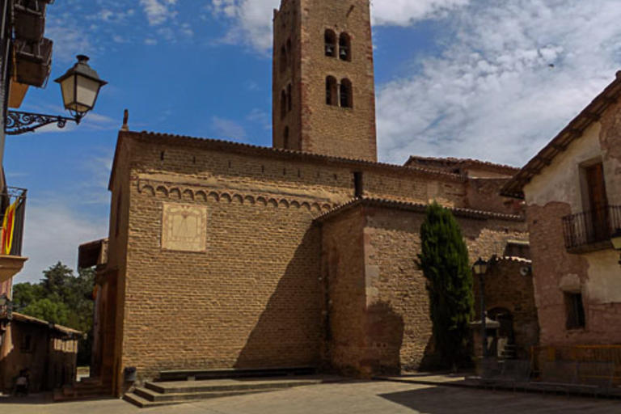

Visita · Seva
Al nucli antic de Seva trobarem l’església de Santa Maria, una de les primeres referències medievals del nucli. A partir de la seva sagrera, que es va fortificar i envoltar de murs al segle XIV,…